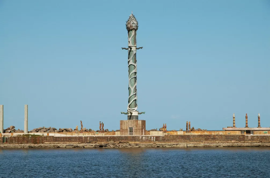

Curiosidades:
1. Rosa dos Ventos: O Marco Zero é conhecido pela sua grande rosa dos ventos no chão, que indica as direções geográficas.

2. Vista para o Rio Capibaribe: Do Marco Zero, é possível ter uma vista privilegiada do Rio Capibaribe, que corta a cidade do Recife, proporcionando um cenário encantador, especialmente ao pôr do sol.

3. Torre de Cristal: É possível avistar o Parque das Esculturas, com a famosa Torre de Cristal, do renomado artista Francisco Brennand
Arquitetura:Nas proximidades do Recife Antigo, é possível encontrar edifícios históricos que remontam ao período colonial e barroco, caracterizados por fachadas ornamentadas, janelas de guilhotina e varandas de ferro trabalhado.

Fique por dentro!
O Marco Zero recebe, anualmente, diversas comemorações, além de de ser um local muito famoso para quem busca eventos, pois a área ao redor é bastante movimentada, especialmente à noite, com bares, restaurantes e eventos culturais que atraem tanto turistas quanto moradores locais.

Outros pontos turísticos de Recife:
Para conhecer mais pontos turísticos do Recife Antigo, visite pontos turísticos.